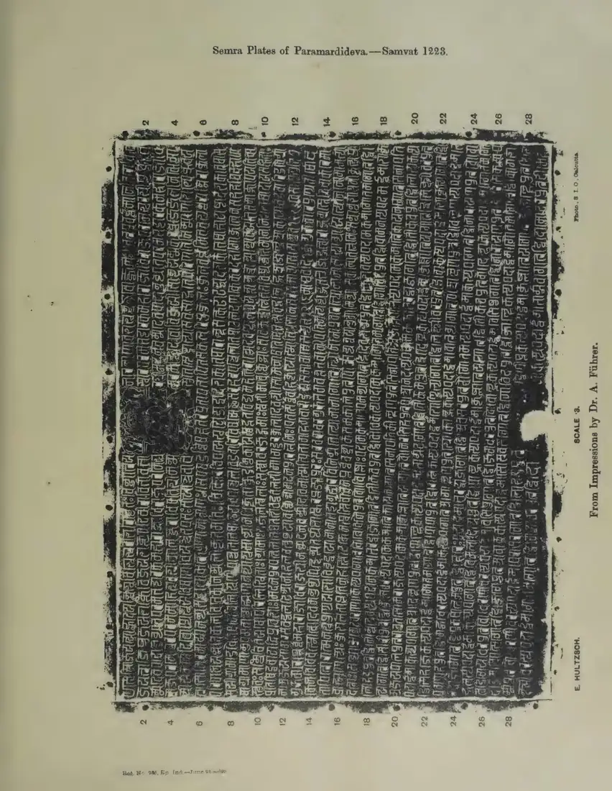
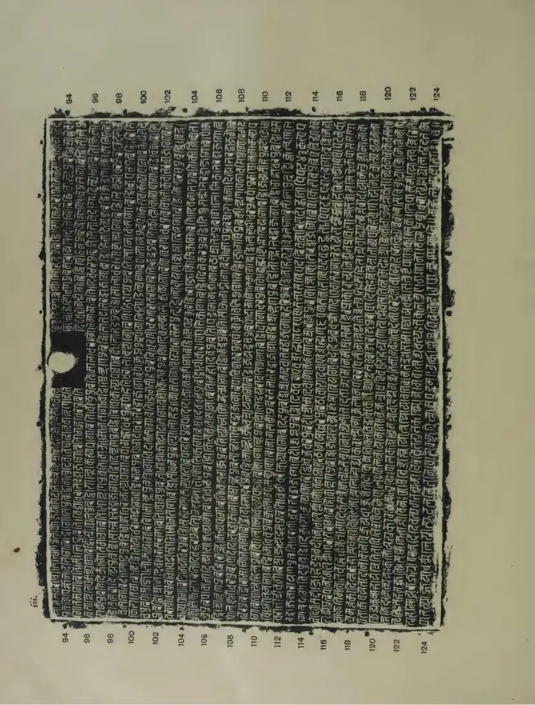

Semra plates of Paramardidēva ; [Vikrama-]Saṅvat 1223
SEMRA PLATES OF PARAMARDIDEVA;
[VIKRAMA-]SAMVAT 1223.
The subjoined edition of this recently discovered inscription is based on ink-impressions which were taken by Dr. A. Führer and sent by him to Professor Bühler, who made them over to me for publication. Dr. Führer states that the original copper-plates were found in September 1892 at Semra, a village in the Bijawar State, Bundelkhand Agency, Central India, and 9 miles west of Shâhgarh, a police station in the Sâgar district of the Central Provinces, and were presented to the Lucknow Museum by the Maharaja of Bijawar through the Political Agent at Nowgong. The plates are three in number, measuring,—to judge from the impressions,—about 2' 1½" in breadth and about 1' 7½" in height, and joined by a plain ring, which passes through a hole at the top or bottom, respectively, of each plate. At the top of the first plate is a representation of the goddess Lakshmî, which divides the first five lines
into equal halves. The figure is seated on a lotus and has four arms; above its shoulders stand elephants with raised trunks.
The preservation of the inscription is very good; here and there an akshara is damaged or effaced; but in most cases, as the transcript shows, the loss can be easily supplied. As the middle plate alone has writing on both sides, the inscription consists of four pages, the lines, 124 in number, running breadthwise. The average size of the letters is inch. The characters are the Nāgarī of the 12th century A.D. They closely resemble those of the two Mahōba inscriptions of which facsimiles were given in Sir A. Cunningham's Reports of the Archæological Survey, Vol. XXI. Plates xxi. and xxii. There is no certain case in which the letter ba is distinguished from va; cha, dha and va also are very similar to each other; and it may be noted that there are no less than five different forms of the letter dha. It is also sometimes difficult to distinguish between ra and va. Very peculiar is an uncouth form of ka, which looks exactly like pā and occurs not rarely, e.g. in kuladhara, l. 93, which might be read as pulēdhara. Several of the numeral figures which occur in the inscription, bear a horizontal bar at the top. We find it in the figures 9 and 5 on plate i. line 13, and in the figure 2 on plate iii. line 113; the first 6 on plate iii. line 115, is likewise formed flat at the top.
The language is occasionally incorrect Sanskrīt, and, with the exception of two verses in the beginning and four at the end, prose. Especially in the long list of names of the donees and of the villages are found a good many Prākrīt or hybrid forms. Thus we have Chaubhuja for Chaturbhuja; Vachchha for Vatsa; Rāuta for Rājaputra; Tīkama and Tīkava for Trivikrama; Vasé for Vasishṭha; Mahindasvāmin for Mahēndrasvāmin; Risikēsa for Hrishīkēsa; Salakhanē for Sallakshaṇa; Sōmē (Sōmēkasya), probably for Sōmadatta; Gāgû (Gāgûkasya) and Gāgē (Gāgēkasya);1 Dēû (Dēûkasya) for Dēvaka; Álhaṇa, Álhī and Álhû (Álhûkasya), probably for Áhlādana; Pálhaṇa, Pálhē, and Pálhû (Pálhûkasya) for Prahlādana;2 and so forth. The spelling of pure Sanskrit words is frequently faulty, e.g. in Parásara for Parásara; Kausika for Kausika; Šānkrītya for Sānkrītya; vasundharā for vasundharā; sákhā for sákhā; ansa3 for aṁsa; Yayurvēda for Yajurvēda. The doubling of chh into chchh is invariably neglected except in a single case, áchchhéttā in line 120. There are also some clerical mistakes, e.g. śrīmanmat for śrīmat; pitāgahēga for pitāmahēna; yótra for gótra; abhani for avani.
The inscription begins with an Anushṭubh ślóka in honour of the Chandrātrēya race of princes:—“Victorious is the race of the Chandrātrēya princes· (sprung from the Moon, the son of Atri), which resembles the moon (because) it gladdens the universe, is revered by all rulers (or worn on his head by Šiva, the lord of the universe), and is brilliant.” Next comes a prose passage which refers to Paramardidēva:—“In this prosperous (race), radiant through the appearance of such heroes as Jayaśakti and Vijayaśakti, who were glorified through their victories over their adversaries, there is victorious the illustrious Paramabhatṭāraka Mahārájádhirája Paramēsvara Paramardidēva, an ardent devotee of Mahēsvara and lord of the famous Kálañjara, who meditated on the feet of (i.e. was the successor of) the illustrious Paramabhatṭāraka Mahārájádhirája Paramēsvara Madanavarmadēva, who meditated on the feet of (i.e. was the successor of) the illustrious P. M. P. Prīthvivarmadēva.” The king is further described in a Šārdūlavikrīdita verse:—“First, Brahman created beauty in Cupid, depth in the Ocean, and in the Lord of heaven lordliness, wisdom in Brīhaspati, and truthful speech in (Yama) the son of (his) austerities.4 Then, when
1 [In Gujarat, Gagā is a familiar abbreviation for Gaurtśaṁkara, and it is possible that Gāgû and Gāgē may stand for the same word.—G. Bühler.]
2 [Compare Palanpur for Prahlādanapura.—G. Bühler.]
3 The spelling nsa for ṁsa is common in a great many other inscriptions of the 6th, 7th and later centuries.
4 [The Šiśupdālavdha, ii. 9, shows that we must rather translate:—“and truthful speech in (Yudhishṭhira) the son of Tapas (Dharma).”—E.H.]
by dint of practice his creative skill had attained perfection, verily, he produced this matchless accumulation of good qualities in this (king).”
Then (l. 6) begins the chief portion of the grant:—“ He who torments all hostile races of kings by his most irresistible valour, who holds the earth in safe keeping like a lady of noble family, and whose mind is purified by (his) mature judgment, exhorts and commands all the assembled,— Brâhmanas and other worthy persons,— (viz.) officials, husbandmen, scribes, messengers, physicians, elders,— down to the Mêdas and Chandâlas, of the following villages:—
- (1) in the district (vishaya) of Vikaura,— (a) Khataudâ-dvâdaśaka, and (b) Tânta(?)-dvâdaśaka, belonging to Râlha, and (c) Hât-âshtâdaśaka, and (d) Sêsayî-grâma;
- (2) in the district (vishaya) of Dudhai,— (a) Pilikhinî-pañchêla, and (b) Itâva-pañchêla;
- (3) in the district (vishaya) of Vaçavâri,— (a) Isarahara-pañchêla, and (b) Uladaṇa, and (c) Kakaradaha;
- (4) in Gôkula,— (a) Nasahahathidahâ (?), and (b) Patha:—
“Be it known to you that the above written villages, with their water and land, with their movable and immovable (belongings), defined by their boundaries, with that which is below and above the ground, with all past, future and present imposts (âdâya),— entrance into them being forbidden to the irregular soldiers (châta) and the rest, excepting all the following,— the town of Madanapura and the ground belonging thereto, (viz.) Gađđarakula, and the glorious deity Sômanâtha, further the villages of Vaçavâri and Dudhai, the property of Lingiâ and Jalhuâ, which are connected with that (Madanapura), as well as a piece of land in Madanapura, measuring four ploughs, (the property) of the Lațias, which is connected with the Ajayâsâgara (i.e. the tank of Ajaya),— have been given, for the sake of the increase of (Our) own and (Our) parents' merit and fame, by Us in the camp of Sônasara, on a Thursday, the 7th day of the bright fortnight of Vaisâkha, Samvat 1223, with (a libation of) water from (Our) hand purified by stems of kuša grass, the wish for prosperity having been duly recited,— [these same villages having] formerly [been granted] by Our grandfather, the illustrious Mahârâjâdhirâja Madanavçrmadêva in the camp of Vârîdurga, on a Thursday, the 15th day of the dark fortnight of Mâgha, Samvat 1219, on the occasion of an eclipse of the sun, after he had bathed according to the rule in the water of a sacred tîrtha, after he had satisfied gods, men and manes, had worshipped, after an adoration of the sun, the lord of the movable and immovable, the divine husband of Bhavânî, and had offered an oblation in fire,— to Brâhmanas emigrated from various agrahâras of the Bhatțtas (Bhattâgrahâra), belonging to various gôtras, having various pravaras and names, and being students of various sâkhâs,— the grant having been made in connection with the intended ground which is to descend to the sons, grandsons and further descendants (of the donees) for a period equal to the duration of the moon and the sun.”
The next 100 lines contain the names of the 309 donees,1 which are arranged according to their Vêdas, and to which are prefixed the abbreviations dvi, i.e. dvivêdin; trî (or tî), i.e. trivêdin; chau, i.e. chaturvêdin; a or agnî, i.e. agnihôtrin; śrô, i.e. śrôtriya; pam, i.e. pandita; dî, i.e. dîkshita; tha, i.e. thakkura; râ or râuta, i.e. râjaputra.2 The share3 which each receives, is duly mentioned.
Towards the end of the document (ll. 117—122) follows the close of the address to the assembled villagers, the exhortation of the royal officials and of future kings, and finally the usual imprecatory verses from the Mahâbhârata:— “Knowing this, you must bring to these
1 See the Alphabetical List at the end of this paper.
2 Here probably only a title given to a Brâhmana.
3 The shares are expressed in padas, just as in Dr. F. E. Hall's inscription, Journal American Oriental Society, Vol. VI. p. 546; compare Vol. VII. p. 26, verse 10.
(above named persons) the shares (of the crop), enjoyments (bhôga), and everything else. Therefore nobody shall cause any hindrance to these (donees) if they enjoy, cultivate, cause to be cultivated, give away, mortgage or sell these villages, together with their houses and walls, together with their gates of exit and entrance, together with all their plants, (viz.) asanas, shoots of sugar-cane, hemp, mangoes, madhúkas, and so forth, together with their forests, hollows, and treasure-trove, together with their mines of iron and so forth, together with their cow-houses, together with (all) other objects found within their boundaries, and together with the external and internal imposts.1 And the king, the royal officials, and the rest shall remit what would accrue to each of them, and this Our grant is not to be taken away nor to be resumed. And even future kings should protect it. And it has been said,” etc.
Quite at the end, after the signature of the king, the scribe has perpetuated his name in the following Mâlini verse:—“The recorder of charitable gifts (dharmalêkhin) called Pṛithvi-dhara, a member of the Vāstavya race of exalted name, who has performed meritorious acts and is a home of all good qualities, has written by the king's order the copper-plate grant with distinct and elegantly formed characters.” “And it has been incised by the coppersmith (pitala-hāra) Pâlhana.”
Our document is thus a confirmation of a former grant by Paramardidêva's grandfather and immediate predecessor,2 Madanavarmadêva. Madanavarman's latest known date is V.S. 1215, and Paramardin's earliest one is V. S. 1224. Hence our inscription reduces the gap between the two kings by about five years. Our date of Paramardidêva, [Vikrama-]Samvat 1223, Vaisâkha śudi 7, Thursday, corresponds, according to Professor Jacobi's Tables, to Thursday, the 27th April, A.D. 1167, the year given being the southern expired year. Our date of Madanavarmadêva, Samvat 1219, Mâgha badi 15, Thursday, corresponds to the 15th February, A.D. 1162, which was a Thursday, the year being the current year, and the scheme used the amânta scheme; the solar eclipse, however, according to Professor von Oppolzer's Canon der Finsternisse, did not take place on that day, but on the preceding new-moon day, the 17th January, and was visible all over India.
Among the localities mentioned, Vâridurga is probably Bârigar in N. L. 25° 14' and E. L. 80° 6' (Indian Atlas, sheet No. 69 S. E.). Madanapura is of course identical with the modern town of this name (Indian Atlas, sheet No. 70 S. W.). Among the other names I find:—
- 1. Vikaura— Beekore khurd and kullan, 4-5 miles S. W. of Madanapura.
- 2. Khaṭaudâ— Khutourea, S. E. of Beekore.
- 3. Sêsayî— Sajee (?), S. E. of Khutourea.
- 4. Dudhai3— Doodhai, N. L. 24° 26' and E. L. 78° 27' (Indian Atlas, sheet No. 70 N. W.).
- 5. Itâva— perhaps Etawah, N. L. 24° 12' and E. L. 78° 16' (Indian Atlas, sheet No. 70 S. W.).
- 6. Vadavâri— Berwara, N. L. 24° 30' and E. L. 78° 41' (Indian Atlas, sheet No. 70 N. W.).
- 7. Uladana— Ooldana khurd, 7 miles N. E. of Madanapura, and Ooldana kullan, N. L. 24° 28' and E. L. 78° 53' (T. A. sheét No. 70 N. W.).
- 8. Patha— Putha, 4 miles E. of Berwara.
1 [i.e. probably imposts paid by the villagers and strangers or Uparîs.— G. Bühler.]
2 According to the pedigree in the Batêsvar stone inscription of Paramardidêva (Ep. Ind. Vol. I. p. 207 ff.), Paramardin's father was Yaśôvarman. But he does not seem to have actually ruled, as no minister is named with him, while those of the other kings are all given.
3 See Ind. Ant. Vol. XVIII. p. 236.
TEXT.1
First Plate.
1 श्री2 ॥ स्वस्ति । जयत्याह्लादयन्विश्वं विश्वेश्वरशिरोधृतः । चन्द्रात्रेयनरेन्द्राणां
वंशश्चन्द्र इवोज्ज्वलः ॥ तत्र प्रवर्द्धमाने विरोधिवि-
2 जयभ्राजिष्णुजयशक्तिविजयशक्त्यादिवीराविर्भावभास्वरे परमभट्टारकमहाराजाधि-
राजपरमेश्वरश्रीपृथ्वी[व]-
3 र्मदेवपादानुध्यातपरमभट्टारकमहाराजाधिराजपरमेश्वरश्रीमदनवर्मदेवपादानुध्यात-
परमभट्टारकमहाराजाधि-
4 राजपरमेश्वरपरममाहेश्वरश्रीकालञ्जराधिपतिश्रीमन्मत्परमर्द्दिदेवो3. विजयो [*]
सौन्दर्यम्करध्वजे जलनिधी गा-
5 भीर्यमर्यं दिवोप्येश्वर्यं4 धिषणे धियञ्च तपसः सत्याञ्च वाचं सुते । सृष्ट्वा-
भ्यासवसाद्गते5 परिणति6 निम्माणशिल्पे ध्रुवं य-
6 त्रासौ निरमाय्यनन्यसदृशो धात्रा गुणानां गणः ॥ स एष दुर्ब्विषहतर-
प्रतापतापितसकलरिपुकुलः कुलवधूमिव7 वशुन्धरान्निराकुलां
7 परिपालयन्नविकलविवेकनिर्मलोक्ततमतिः । विकौरविषये खटौडाद्दादशक ।
तथा राल्हसत्कटांटद्दादशक । तथा हाटाष्टादशक । तथा से-
8 सयीग्राम । दुधैविषये पिलिखिणीपञ्चेल । तथा इटाव्रपञ्चेल । वडवारि-
विषये इसरहरपञ्चेल । तथा उलदण । ककरदह । गोकुले
नसहहथिदहा । प-
9 थ । ग्रामाणामुपगतान्वाह्यणानन्यांश्च मान्यानधिकृतान्कुटुम्बिकायस्थदूतवैद्यमह-
त्तरान्मेदचण्डालपर्यन्तान्सर्व्वान्संवोवयति8. समाज्ञापयति चा-
10 स्तु वः संविदितं यथोपरिलिखिताः9 (i) ग्रामाः सजलस्थलाः सस्थावरजङ्गमाः
स्वसीमावक्रिन्नाः10 सावज्जर्जु11 भूतभविष्यव्वर्त्तमाननिःशेषादायसहिताः
11 प्रतिषिद्धचाटादिप्रवेशाः । मदनपुरपत्तन । तथैतत्संवद्धतलसीमा । गङ्कर-
कुल । देवश्रीसोमनाथ । तथैतत्संवद्धलिङ्गिश्राजल्हुश्राकयोर्वडवारि-
दुवैग्रा-12
12 म । अजयसागरसंवडलटिआनां हलचतुष्टयावछिन्ना मदनपुरे भूमिः ।
एतत्सर्वं 1वह्निकृत्यास्माभिः सोनसर[स]मावीसे2 । सम्वत3 १२२३
4वैसाखशुदि ७
13 गुरुवारे । पूर्वं महाराजाधिराजश्रीमन्मदनवर्मदेवैनास्मत्पितागहेग5 वारीदुर्ग-
समावासे सम्वत6 १२१८ माघवदि १५ गुरुवारे पुण्यतीर्थोद-
14 केन विधिवत्स्नात्वा देवमनुष्यपितृन्संतर्प्य भास्करपूजापुरःसरं चराचरगुरुं
भगवन्तं भवानीपतिमभ्यर्चं हुतभुजि हुत्वा राहुग्रस्ते दिवाकरे मा-
15 तापित्रीरात्मनश्च7 पुण्ययशोविवृद्धये । नानाभद्दायहारविनिर्गतेभ्यो नानागोत्रे-
भ्यो नानाप्रवरेभ्यो 8नानासाखाध्यायिभ्यो नानानामभ्यो
16 ब्राह्मणेभ्यः कुशलतापूतेन हस्तोदकेन स्वस्तिवाचनपूर्वं चन्द्रार्कसमकालं पुत्र-
पौ[त्र]ाद्यन्वयानुगामिन्याः संकल्पितभूमेः सम्वन्धे शासनीकृत्य प्र-
17 दत्ताः । मध्ये (॥) ऋग्वेदचरणे ॥ कश्यपगोत्रचौ [*] वोधानेपुत्रचौ ।
विष्णोः पदमेकम9 ॥ उपमन्युगोत्रहि । देव[श]र्मपुत्रहि । केशवस्य
पदमेकम । गौतमगोत्रहि ।
18 लोहडपुत्रहि । 10नीम्वदेवस्य पदमेकम । भरद्वाजगोत्रहि । तीकवपुत्रहि ।
धांधेकस्य पदमेकम । [गौ]तम[गो]त्रहि [*] गोविंदपुत्रहि ।
वामनस्य पदमर्द्धम11 । 12शांक्ष-
19 त्यगोत्रहि । सीरीपुत्रहि । कुलधरस्य पदमेकम । 13त्रैकायनगोत्रसेनापतिकील्ह-
णपुत्रसेनापतिअजयपालस्य पदमेकम । 13त्रैकायनगोत्रसेनापति-
20 अजयपालपुत्रराउतसोमराजस्य पदमेकम । कृष्णात्रेयगोत्रचौ । 14नरसिद्दपुत्रपं ।
आनंदस्य पदमेकम । भरद्वाजगोत्रहि । तीकवपुत्रहि । लाखूकस्य
21 पदार्द्धम । कश्यपगोत्रश्च । देल्हूणपुत्रहि । पाल्हेकस्य पदार्द्धम । भार्गवगो-
त्रहि । तीकमपुत्रहि । देल्हूकस्य पदार्द्धम । कृष्णात्रेयगोत्रहि ।
15लक्ष्मीवरपुत्र-
22 हि । सहजैकस्य पदार्द्धम । गौतमगोत्रहि । पापापुत्रहि । रीसू-
कस्य पदार्द्धम16 । शाण्डिल्यगोत्रहि । 17लक्ष्मीवरपुत्रहि । वाक्यस्य
पदार्द्धम । 18शांक्षत्यगोत्रहि ।
1 Read वह्निष्कृत्या०.
2 Read समावासे.
3 Read संवत्.
4 Read वैशाख.
5 Read पितामहेन.
6 Read संवत्.
7 श्रुत्यास्तु श्रुत्यास्तु.
8 Read शाखा०.
9 Read एकम् throughout the inscription.
10 Read निम्ब०.
11 Read अर्धम् throughout the inscription.
12 Read सांक्षत्य.
13 Read त्रैकायण.
14 Read ०सिंह.
15 Read बक्षीधर.
16 Read पदार्धम्.
17 Read बक्षीधर.
18 Read सांक्षत्य.
23 1पवणाहपुत्रद्वि । गङ्गाधरस्य पदार्द्धम । कश्यपगोत्रञ्च । गाल्हणपुत्रश्चो ।
कान्दूकस्य पदार्द्धम । वाभ्रव्यगोत्र(1)पं । आल्हणपुत्रद्वि । धेल्हणस्य
पदार्द्धम । भ-
24 रहाजगोत्रद्वि । पुरुषोत्तमपुत्रद्वि । हरेः पदार्द्धम् । भर्द्दाजगोत्रद्वि ।
अवसरपुत्रचौ [1*] गीतमस्य पदार्द्धम । कश्यपगोत्रद्वि । नारायण-
पुत्रचौ । वा-
25 हुलस्य पदार्द्धम । कश्यपगोत्रद्वि [1*] विमलादित्यपुत्रद्वि । पाल्हूकस्य पदा-
र्द्धम । क्षणात्रेयगोत्रद्वि । तीकवपुत्रचौ2 । देल्हाकस्य पदार्द्धम ।
गोतमगो-
26 त्रद्वि । गयाधरपुत्रचौ । धरणीधरस्य पटार्द्धम3 । वसिष्ठगोत्रद्वि । 4जग-
धरपुत्रचौ । वाल्हूकस्य पटार्द्धम5 । वसिष्ठगोत्रद्वि । नारायणपुत्र-
द्वि । रिसिकस्य प-
27 दार्द्धम । 6कौत्सगोत्रद्वि । जगेपुत्रञ्च । वाक्कूकस्य पदार्द्धम । 7सौप्तवसगो-
त्रद्वि [1*] गोविंदपुत्रद्वि । जाल्हेकस्य पदार्द्धम । गीतमगोत्रद्वि ।
नागश-
28 म्यंपुत्रचौ । धरणीवरस्य3 पदार्द्धम । 9परासरगोत्रद्वि । लाह[ड]पुत्रद्वि ।
पीथूकस्य पदार्द्धम । क्षणात्रेयगोत्रद्वि । वाल्हेपुत्रद्वि । ल-
29 क्ष्मीधरस्य पदार्द्धम । गीतमगोत्रद्वि । गङ्गाधरपुत्रद्वि । 10दा[यी]कस्य
पदार्द्धम । भार्गवगोत्रद्वि । दामोदरपुत्रदी । मही-
Second Plate; First Side.
30 धरस्य पदार्द्धम । 11परासरगोत्रद्वि । नारायणपुत्रद्वि । विश्वरूपस्य
पदार्द्धम ॥ 12कौसिकगोत्रद्वि । नागशम्पुत्रद्वि । दामोदरस्य
पदार्द्धम । 13वसिष्ठगोत्र-
31 द्वि । दामोदरपुत्रद्वि । पद्मनाभस्य पदार्द्धम । 14परासरगोत्रद्वि । विद्या-
धरपुत्रचौ । पाल्हूकस्य पदार्द्धम । कश्यपगोत्रद्वि । पाल्हूपुत्रद्वि ।
वाल्हणस्य पदार्द्धम ।
1 Read perhaps better परिणाह.
2 Read चौ.
3 Read पदार्धम.
4 Read जगद्धर.
5 Read पदार्धम.
7 Read सौप्तवस.
6 The kau of कौत्स looks like chaud.
8 Read धरणीधरस्य.
9 Read पराशर.
10 The य in दायीक is badly formed.
11 Read कौशिक.
12 Read वसिष्ठ.
11 Read पराशर.
14 Read पराशर.
32 कृष्णात्रेयगोत्रहि । चतुर्भुजपुत्रहि । दामोदरस्य पदमेकम । मांडव्यगोत्रहि ।
भास्करपुत्रहि । गाल्हेकस्य पदार्दम । कश्यपगोत्रहि । नारायण-
33 पुत्रचौ । वामनस्य पदार्दम । 1शांकृत्यगोत्रहि । 2रिषिपुत्रहि । जाल्हेकस्य
पदार्दम । कश्यपगोत्रचौ । आल्हणपुत्रचौ । देहुलस्य पदार्दम ।
कश्यपगोत्रहि । देव-
34 व्रतपुत्रहि । वासुदेवस्य पदमेकम । कश्यपगोत्रहि । माल्हेपुत्रचौ ।
देवदत्तस्य पदमेकम । 3परासरगोत्रहि । श्रीधरपुत्रहि । रामस्य
पदमेकम । कौण्ड-
35 खगोत्रहि4 । देल्हूपुत्र(।)चौ । 5आल्हूकस्य पदमेकम । (एक।) वसिष्ठगोत्रहि ।
श्रीधरपुत्रहि । रील्हूकस्य पदमेकम । कश्यपगोत्रहि । नाटपुत्रहि ।
गङ्गाधरस्य पदमेकम । प-
36 रासरगोत्रहि6 । नाहिलपुत्रहि । देऊकस्य पदार्दम । वत्सगोत्रहि ।
गोल्हेपुत्रहि । हरिशर्मणः पदार्दम । गौतमगोत्रहि । कनसामि-
पुत्रहि । जैतेकस्य पदचतुर्थान्सः7 । गौ-
37 तमगोत्रहि । कद्रूपुत्रचौ । महिंदस्वामिनः पदार्दम । कृष्णात्रेयगोत्रहि ।
माल्हापुत्रहि । लक्ष्मीधरस्य पदार्दम । कृष्णात्रेयगोत्रहि । माल्हा-
पुत्रहि । पीथूकस्य पदार्दम । चन्द्रा-
38 त्रेयगोत्रहि । जाहुलपुत्रहि । मनोरथस्य पदार्दम । कश्यपगोत्रहि ।
वामनपुत्रहि । नारायणस्य पदार्दम । 8वधुलगोत्रहि । वराह-
पुत्रचौ । रील्हेकस्य पदार्दम । गौ-
39 तमगोत्रहि । कनसामिपुत्रहि । लाखूकस्य पदचतुर्थान्सः9 । गौतमगोत्रहि ।
महिंदस्वामिपुत्रहि । पजूनस्य10 पदचतुर्थान्सः11 । गौतमगोत्रहि ।
महिंदस्वामिपुत्रहि [*] गोविंद-
40 स्य पदचतुर्थान्सः11 । वत्सगोत्रहि । कोकापुत्रहि । वासुदेवस्य पदार्दम ।
कृष्णात्रेयगोत्रहि । 12विस्वरूपपुत्रहि । रीसडस्य पदार्दम । कौत्स-
गोत्रहि । सोलपुत्रहि । वाक्यस्य पदार्द-
1 Read सांकृत्य-
2 Read ऋषि-
3 Read पराशर-
4 Read कौण्डन्य-
5 Alha looks like Alhoa.
6 Read पराशर-
7 Read चतुर्थीशः-
8 Read वन्मुल-
9 Read चतुर्थीशः-
10 Read पजूनस्य-
11 Read चतुर्थीशः-
12 Read विश्वरूप-
41 म । कश्यपगोत्रद्वि । देवशर्मपुत्रचौ । 1आल्हूकस्य पदार्द्धम् । 2वसिष्ठ-
गोत्रद्वि । हरिपुत्रद्वि । सुभंकरस्य3 पदार्द्धम् । पाणिनिगोत्रपं ।
महाणंदपुत्रपं । सर्वधरस्य पदमेक-
42 म । पाणिनिगोत्रपं । महाणंदपुत्रपं । नारायणस्य पदमेकम ।
कश्यपगोत्रपं । जाडुपुत्रठ । [देवदत्त]स्य पदमेकम । वसिष्ठगोत्रद्वि ।
कामेपुत्रद्वि । [थे?]डू-
43 कस्य पदमेकम । 4त्रैकायनगोत्रद्वि । मधुसूदनपुत्रद्वि । वक्रराजस्य पद-
मेकम । भार्गवगोत्रचौ । गागूपुत्रचौ । सुभंकरस्य5 पदमेकम ।
भार्गवगोत्रचौ । व्र[ह्न]-
44 पुत्रचौ । यज्ञधरस्य पदमेकम । भार्गवगोत्रचौ । सीहडपुत्रचौ । विद्या-
धरस्य पदमेकम । गौतमगोत्रद्वि । 6भवणसामिपुत्रद्वि । देल्लणस्य
पदमर्द्धम [1] कु[त्व]गो-
45 त्रद्वि । सीलणपुत्रद्वि । वाक्कूकस्य पदार्द्धम । भरद्वाजगोत्रद्वि । हरि-
पुत्रद्वि । माधवस्य पदार्द्धम । शाण्डिल्यगोत्रद्वि । तीकवपुत्रद्वि ।
आमदेवस्य पदचतुर्थान्मः7 [1*] तथा
46 भ्रातृवासुदेवस्य पदचतुर्थान्मः7 । तथा भ्रातृद्वि । गोविंदस्य पदचतुर्थान्मः7 ।
तथा भ्रातृद्वि [1*] केशवस्य पदचतुर्थान्मः7 । भार्गवगोत्रद्वि [1*]
विष्णुपुत्रद्वि । वासुदेवस्य प-
47 दार्द्धम ॥8 । गार्यगोत्रद्वि । 9परसुरामपुत्रचौ । लक्ष्मीधरस्य पदार्द्धम ।
भार्गवगोत्रव्वि10 । महासाणपुत्रचौ । वाल्हेकस्य पदार्द्धम । उप-
मन्युगोत्रद्वि । व्रह्न-
48 पुत्रद्वि । वावणस्य11. पदार्द्धम् । भार्गवगोत्रद्वि । 12महाशमद्वि [1*] देवर्षेः
पदार्द्धम । कश्यपगोत्रद्वि । भोगादित्यपुत्रद्वि । 13रिषेः पदार्द्धम ।
उपमन्युगोत्रद्वि । 14रिषि-
49 पुत्रद्वि । विश्वरूपस्य पदार्द्धम । गौतमगोत्रत्रिलोचनपुत्रद्वि । नामदेवस्य
पदार्द्धम । कश्यपगोत्रद्वि । 15गोविदपुत्रद्वि । मवुसूदनस्य16 पदार्द्धम ।
शाण्डि-
| 1 | Álhú looks like Álhla. | 2 | ४ looks like षु. |
| 4 | Read चैकायण. | 6 | Read शुभंकरस्य. |
| 7 | Read चतुर्यांशः. | 8 | Dele ॥:. |
| 10 | Read द्वि. | 11 | Probably रावणस्य. |
| 12 | Read ऋषेः. | 14 | Read ऋषि. |
| 16 | Read मधुसूदनस्य. |
3 Read शुभंकरस्य.
6 Perhaps भुवणसामि.
9 Read परशु°.
12 Probably महाशर्मपुत्र.
15 Read गोविन्द.
50 ल्यगोत्रद्वि । विश्वरूपपुत्रद्वि । पीथूकस्य पदार्दम । भार्गवगोत्रद्वि ।
महीधरपुत्रद्वि । तीकवस्य पदार्दम । शाण्डिल्यगोत्रद्वि । विश्व-
रूपपुत्रद्वि । लाखूक-
51 स्य पदार्दम । भरद्वाजगोत्रद्वि । कपिलिश्वरपुत्रद्वि । प्रभाकरस्य पदा-
र्दम । भार्गवगोत्रद्वि । सीरीपुत्रद्वि । लाहडस्य पदार्दम ।
दार्ब्ध्युतगोत्रवहुलदेवपुत्र-
52 पीथनस्य पदमेकम । धौस्यगोत्रद्वि । वायीपुत्रचौ । केशवस्य पदमेकम ।
1गौतममोत्रद्वि । 2सुभंकरपुत्रचौ । भास्करस्य पदमेकम । दार्ब्ध्युतगोत्रचौ । जाल्हूमुत्रचौ । रि-
53 सिक्षिशस्य3 पदमेकम । चन्द्रात्रेयगोत्रद्वि । सोमदेवपुत्रपं । माल्हूकस्य
पदमेकम । धौस्यगोत्रद्वि । असधरपुत्रद्वि । वीठकस्य पदमेकम ।
भार्गवगोत्राद्वि4 । भायिलपु-
54 त्रद्वि । लाखूकस्य पदकेकम5 । कश्यपगोत्रद्वि । 6सुभाकरपुत्रदी । राल्हू-
कस्य पदमेकम । वसिष्ठगोत्रद्वि । पाण्डितपुत्रद्वि । गङ्गाधरस्य
पदमेकम । 7त्रैकायनगोत्रवसू-
55 पालपुत्रद्वि । अण्णतपालस्य पदमेकम् । वसिष्ठगोत्रद्वि । गोविंदपुत्रद्वि [*]
त्रिलोचनस्य पदमेकम । कश्यपगोत्रव्वि9 । आल्हणपुत्रद्वि । विजय-
सीहस्य पदमेकम । 10परास-
56 रगोत्रद्वि । 10विद्यावरपुत्रचौ । वाल्हूकस्य पदार्दम् । कश्यपगोत्रद्वि ।
देवेश्वरपुत्रद्वि । वावणस्य11 पदार्दम् । कश्यपगोत्रद्वि । नारायणपुत्रद्वि ।
जगधरस्य12 पदार्दम । भा-
57 र्गवगोत्रचौ । गांगूपुत्रचौ [*] गोविंदस्य पदार्दम् । 13गौतमगोत्रद्वि ।
14मवुसूदनपुत्रद्वि । देजकस्य पदार्दम । 15वीस्यगोत्रद्वि [*]
16रिषिपुत्रद्वि । पुरुषोत्तमस्य पदार्दम । 17वसिष्ठगो-
58 त्रद्वि । नारायणपुत्रद्वि । दिवाकरस्य पदार्दम् । 18वतिष्ठगोत्रद्वि । राम-
चन्द्रपुत्रद्वि । वासुदेवस्य पदार्दम् । कुत्सगोत्रद्वि । वाम्रधरपुत्रद्वि ।
पाल्हूकस्य पदार्दम19 । कृष्णात्रे-
1 Read गौतमगोत्र.
2 Read शुभंकर.
3 This is a corruption of दृषीकेश.
4 Read भार्गवगोत्रद्वि.
5 Read पदमेकम्.
6 Read शुभाकर.
7 Read त्रैकायण.
8 Read द्वि.
9 Read पराशर.
10 Read विद्याधर.
11 Probably रावणस्य.
12 Read जगद्धरस्य.
13 गौ looks like gpó.
14 Read सधुसूदन.
15 Read धौस्य.
16 Read क्षष्ठि.
17 The shṭha of बसिष्ठ looks like pṭha.
18 Read बसिष्ठ ; shṭha looks like pṭha.
19 Read पदार्धम्.
59 यगोत्रद्वि । जाह्नडपुत्रद्वि । मवुसूदनस्य1 पदार्दम् । 2गार्ग्ययोत्रद्वि ।
3परासरपुत्रद्वि । वेदस्य पदार्दम । 4पसिष्ठगोत्रद्वि । गङ्गाधरपुत्रद्वि ।
मवुसूदनस्य5 पदार्दम [*] अत्रि-
60 गोत्रद्वि । केशवपुत्रद्वि । रिसिकेसस्य6 पदार्दम । शाण्डिल्यगोत्रद्वि ।
चंद्रादित्यपुत्रद्वि । विद्याधरस्य पदार्दम । कश्यपगोत्रठ । शर्मादि-
त्यपुत्ररा । हालस्य पदमे-
Second Plate; Second Side.
61 कम । भरद्वाजगोत्रना । नारायणपुत्रना । लक्ष्मीधरस्य पदमेकम ।
प्रतीहारान्वये रा । जाह्नडपुत्ररा । मह्लिकस्य पदद्वयम् । 7कौसिक-
गोत्रमहीपालपुत्रद्वि । वामदेवस्य प-
62 दार्दम । कश्यपगोत्रपं । नरसिंहपुत्रपं । केशवस्य पदार्दम । 8ययुर्वेद-
चरणे ॥ भरद्वाजगोत्रपं । 9आनंदपुत्रश्च ॥ पं । देवशर्माणः पदद्वयम10 ।
भरद्वाजगोत्रश्च । गासलपुत्रद्वि । ज-
63 यशर्माणः पदमेकम् । भरद्वाजगोत्रश्च । गासलपुत्रद्वि । माल्लूकस्य
पदमेकम । कश्यपगोत्रद्वि । आल्हणपुत्रश्चग्नि । कुलादित्यस्य
पदमेकम । भरद्वाजगोत्रद्वि । अस-
64 धरपुत्र(1)पं । सीलूकस्य पदमेकम । भरद्वाजगोत्रपं । पाल्हणपुत्रद्वि [*]
सोमेकस्य पदमेकम । कौस्मिगोत्रपं । पीथनपुत्रद्वि । असधरस्य
पदमेकम । 11परासरगोत्रद्वि । सोमद-
65 त्तपुत्रचौ । श्रीनिवासस्य पदमेकम । गौतमगोत्रद्वि । सूपटपुत्रपं । चौभु-
जस्य पदमेकम् । गौतमगोत्रचौ [*] सुजपुत्रपं । पृथ्वीधरस्य
पदमेकम । भरद्वाजगोत्रपं । पुरुषो-
66 त्तमपुत्रपं । गागेकस्य पदमेकम । चन्द्रात्रेयगोत्रदी । अभिनंदपुत्रदी ।
विद्यानंदस्य पदमेकम । चन्द्रात्रेयगोत्रदी । अभिनंदपुत्रदी ।
धर्मानंदस्य12 पदमेकम् । 13त्रैकायनगोत्र-
1 Read मधुसूदनस्य.
2 Read गोत्र.
3 Read पराशर.
4 Read वसिष्ठ.
5 Read मधुसूदनस्य.
6 See page 162, note 3.
7 Read कौशिक.
8 Read यजुर्वेद.
9 There seems to be a mistake in अानंदपुत्रश्च ॥ पं ।
10 Read द्वयम्.
11 Read पराशर.
12 Read धर्मानंदस्य.
13 Read त्रैकायण.
67 सेनापतिश्रजयपालपुत्रद्वि । महराजस्य1 पदमेकम । 2त्रैकायनगोत्रसंनापति-
श्रजयपालपुत्रद्वि । वक्रराजस्य पदमेकम् । 3कौसिकगोत्रदी ।
महाशर्मपुत्रदी । वासु-
68 केः पदमेकम । अत्रिगोत्रद्वि । रत्नेश्वरपुत्रद्वि । मालावरस्य4 पदमेकम् ।
कश्यपगोत्रद्वि । जाल्हणपुत्रद्वि । मह्वि[ध]रस्य5 पदमेकम् । वत्स-
गोत्रद्वि । तील्हूपुत्रपि6 । सल-
69 खणेकस्य पदद्वयम7 । 8परासरगोत्रपं । माल्हणपुत्रपं । पीथनस्य पदमेकम् ।
8परासरगोत्रपं । महुलपुत्रपं । कीठणस्य पदमेकम् । 9वसिष्ठगोत्रद्वि ।
गयाधरपु-
70 त्रद्वि । लालिसूपटयो[:*] प[द]मेकम । वत्सगोत्रद्वि । सूपटपुत्रद्वि ।
वरणीधरस्य10 पदमेकम् । वत्सगोत्रदी । कमलासनपुत्रदी । गोठस्य
पदमेकम् । माहुलगोत्रद्वि । वा-
71 क्लिपुत्रदी । मनादित्यस्य पदमेकम् । 11परासरगोत्रकृष्णशर्मपुत्रश्रग्नि ।
जयशर्मणः पदमेकम् । 12वसिष्ठगोत्रद्वि । गासलपुत्रभानिकस्य
पदमेकम् । भरद्वा-
72 जगोत्रद्वि । कील्हणपुत्रद्वि । दामोदरस्य पदमेकम् । वसिष्ठगोत्रदी ।
धानूपुत्रदी । नीलकंठस्य पदमेकम् । 13शांक्तत्यगोत्रद्वि । 14लखगादि-
त्यपुत्रदेजकस्य पदमे-
73 कम् । भरद्वाजगोत्रद्वि । गयाधरपुत्रद्वि । देवर्षि(!)द्वि । वावण15 ।
द्वि । वेदू [*] एषां पदमेकम् । 16मौद्गल्यगोत्रद्विवेदश्रीमहसूपुत्र-
श्रोत्रियमीलूकस्य पदार्द्धम् ।
74 कश्यपगोत्रपं । सुरोत्तमपुत्रद्वि । लक्ष्मीधर । द्वि । धरणीधर । तथा
द्वि । देवशर्मपुत्रद्वि । गागू । एषां पदमेकम् ।
वत्सगोत्रद्विवेदश्रीश्रजैपुत्रद्वि16 । ऊहडस्य पदार्द्धम् ।
75 भरद्वाजगोत्रद्वि । देवशर्मपुत्रद्वि । नरोत्तमस्य पदार्द्धम् । कश्यपगोत्रद्वि । पाल्हण-
पुत्रद्वि । गाल्हणस्य पदार्द्धम् । 17परासरगोत्रद्वि । असधरपुत्रद्वि । पीथनस्य
पदार्द्धम् ॥
1 Read महाराजस्य.
2 Read त्रैकायण.
3 Read कौशिक.
4 Read मालाधरस्य.
5 Read महीधरस्य.
6 Read पं.
7 Read दयम्.
8 Read पराशर.
10 Read धरणीधरस्य.
9 The shṭha of वसिष्ठ looks like pṭha.
11 Read पराशर.
12 The shṭha of वसिष्ठ looks like vu.
13 Read सांक्तत्य.
14 Read लखणादित्य.
15 Probably रावण.
16 Probably द्विवेदिश्री.
17 Read पराशर.
76 गीतमगोत्रहि । व[स्]पुत्रहि । पीठुकस्य पदार्दम । भरद्वाजगोत्रहि ।
पवणाहपुत्रहि । सूढस्य पदार्दम । 1उपमन्यगोत्रहि । नाटेपुत्रपं ।
श्रीधरस्य पदार्दम । भरद्वाजगो-
77 त्रहि । आल्हूणपुत्रहि । नारायणस्य पदार्दम । 2परासरगोत्रहि । व्रह्म-
पुत्रहि । भाभूकस्य पदार्दम । वत्सगोत्रहि । लक्ष्मीधरपुत्रपं ।
जाल्हूकस्य पदार्दम । भरद्वाजगोत्रहि । म-
78 हीधरपुत्रदी । महाधरस्य3 पदार्दम । शाण्डिल्यगोत्रपं । गागेपुत्रदी ।
जागूकस्य पदार्दम । भार्गवगोत्रहि । हरिदत्तपुत्रहि । सीरीकस्य
पदार्दम । 4कौसिकगोत्रहि । सोमदे-
79 वपुत्रहि । श्रीधरस्य पदार्दम । अत्रिगोत्रहि । नारायणपुत्रहि ।
जाहुडस्य पदार्दम । अत्रिगोत्रहि । नारायणपुत्रहि । धरणी-
धरस्य पदार्दम । भरद्वाजगोत्रहि । लखनण-5
80 पुत्रहि । गाल्हूकस्य पदार्दम । 6कौण्डिल्यगोत्रहि । श्रीधरपुत्रहि । मधु-
कस्य पदार्दम । 7वीडीयनगोत्रहि । पाल्हूपुत्रहि । दामरस्य
पदार्दम । 8परासरगोत्रहि । पद्माक-
81 रपुत्रहि । मालाधरस्य पदार्दम । 9परासरगोत्रहि । पद्माकरपुत्रहि ।
विद्याधरस्य पदार्दम । 10कौण्डिल्यगोत्रहि । दिवाकरपुत्रहि । भास्क-
रस्य पदार्दम । शांडिल्यगो-
82 त्रसोमेश्वरपुत्रहि [*] शिवादिल्यस्य पदार्दम ॥ 10कस्यपगोत्रहि । केशवपुत्रहि ।
चक्रस्वामिनः पदार्दम । कौशिकगोहि11 । गोहुडपुत्रहि [*] वीकयस्य
पदार्दम ॥ वत्सगोत्रश्री [*] वामदेवपुत्रहि । पीथूक-
83 स्य पदार्दम । 12कौसिकगोत्रगोहुडपुत्रहि । माल्हूकस्य पदार्दम ॥
13कस्यपगोत्रविस्वरूपपुत्रहि । दिवाकरस्य पदार्दम ॥ व[त्स]गोत्रकी-
त्तिधरपुत्रहि । सांगमस्य पदार्दम ॥ 14परासरगोत्रसोमे-
84 श्वरपुत्रअ । भाभूकस्य पदार्दम ॥ 15कस्यपगोत्रसूल्हूणपुत्रहि [*] लालिकस्य
पदार्दम ॥ गीतमगोत्रजयसर्मपुत्रहि16 [*] भावसर्मण-17 पदार्दम ॥
18परासरगोत्रहि । भास्करपुत्रहि । वाल्हूकस्य पदार्द ॥
85 'मौद्गल्यगोत्रद्वि । तीकमपुत्रत्रि । धरणीधरस्य पदार्द्धम ॥ 2कौसिकगोत्र-
द्वि । वील्हूपुत्रपं । केशवस्य पदार्द्धम ॥ 2कौशिकगोत्रद्वि [*] पाल्हू-
पुत्र[द्वि] । ऊल्हेकस्य पदार्द्ध । भारद्वाजगोत्रद्वि । 3सुभंकर-
86 पुत्रद्वि [*] देवेश्वरस्य पदार्द्धम ॥ 4कस्यपगोत्रद्वि [*] धरणीधरपुत्रद्वि ।
नारायणस्य पदार्द्धम6 ॥ मौनसगोत्रद्वि । नारायणपुत्रद्वि । विद्याधरस्य
पदार्द्धम ॥ भारद्वाजगोत्रगोठपुत्रचौ । लाहडस्य पदार्द्धम ॥
87 गौतमगोत्रदेवशर्मपुत्रद्वि । जाल्हूकस्य पदार्द्धम ॥ 6साक्षत्यगोत्रति ।
महैश्वरपुत्र(i)द्वि [*] गा[गू]कस्य पदार्द्धम ॥ भरद्वाजगोत्रठ ।
माधवपुत्रठ । लाहडस्य पदमेकम । 7परासरगोत्रदी । देव-
88 नाभपुत्रदी । जैतनाभस्य पदमेकम । कश्यपगोत्रद्वि । वत्सपुत्रद्वि ।
महीधरस्य पदार्द्धम । कश्यपगोत्रद्वि । नागशर्मपुत्रद्वि । विद्या-
धरस्य पदार्द्धम । मौद्गल्यगो-
89 त्रद्वि । 8रिषिपुत्रद्वि । दामरस्य पदार्द्धम9 । कृष्णात्रेयगोत्रद्वि । सोनड-
पुत्रद्वि । रासलस्य पदार्द्धम । शाण्डिल्यगोत्रति ।
10मालावरपुत्रति । वाल्हेकस्य पदार्द्धम् । जीव-
90 न्तायनगोत्रद्वि । 11सुभादित्यपुत्रपं । देल्हस्य पदार्द्धम । शाण्डिल्यगोत्रति ।
आल्हीपुत्रति । माल्हणस्य पदार्द्धम । शाण्डिल्यगोत्रति । आल्ही-
पुत्रति । साल्हणस्य पदार्द्ध-
91 म । कश्यपगोत्रश्च । श्रीधरपुत्रश्च । यशीधरस्य पदार्द्धम । भरद्वाजगो-
त्रद्वि । माढूपुत्रद्वि । रील्हूकस्य पदार्द्धम । 12लौगाक्षगोत्रद्वि ।
गोपतिपुत्रद्वि । पीथूकस्य प-
92 दार्द्धम । कश्यपगोत्रचौ । केशवपुत्रचौ । राल्हेकस्य पदार्द्धम । भर-
द्वाजगोत्रद्वि । माढूपुत्रद्वि । देजकस्य पदार्द्धम् । भार्गवगोत्र-
द्वि । [ग • पुत्र]-13
1 Read मौद्गल्य.
2 Read कौशिक.
3 Read शुभंकर.
4 Read कश्यप.
5 Read पदार्धम्.
6 Read सांक्षत्य.
7 Read पराशर.
8 Read ऋषि.
9 Read पदार्धम्.
10 Read मालाधर.
11 Read शुभादित्य.
12 Read लौगाक्ष.
13 The lower portion of the last four aksharas is gone. The two first may be Gâgê, Gâingê, or Gâgû; the anusvâra may be an accidental dot.
Plate 1 is bound after this page.
Plate 2 is bound after this page.
Third Plate.
93 [चौ?] कुलधर1 । चौ । लाखणपुत्र[चौ] । जयाणंद । तथा भ्रातृ-
आनंद2 । तथा पुत्रमाधव । 3विष्णुवृद्धिगोत्रचौ । लाहडपुत्रद्वि ।
सोमेश्वर । 4परासरगोत्रचौ । गोविंद-
94 पुत्रचौ । पजून । दर्भिगोत्रद्वि । गोमेपुत्रद्वि । वासुदेव । तथा भ्रातृ-
वाल्हण5 । दर्भिगोत्रद्वि । गोधणपुत्रमारायण6 । दर्भिगोत्रद्वि ।
गल्हेपुत्रद्वि । आनंद ।
95 गोतमगोत्रति । सीलिपुत्रति । विद्याधर । भरद्वाजगोत्रति । गङ्गाधर-
पुत्रति । देवधर । गर्गगोत्रद्वि । पीथनपुत्रद्वि । कूके ।
7वंपुलगोत्रद्वि । सीलिपु-
96 त्रसाल्हे । उपमन्युगोत्रद्वि । श्रीपालपुत्रद्वि । साल्हे । कश्यपगोत्रति ।
वीठुपुत्रति । मालाधर । गौतमगोत्रति । देवधरपुत्रति ।
सतानंद8 । शांडिल्यगोत्रति । कुमार-
97 शर्मपुत्रति । देऊ । गौतमगोत्रति । साल्हणपुत्रति । वाऊ । मौनस-
गोत्रद्वि । 9स्वल्हणपुत्रद्वि । सांतट10 । भरद्वाजगोत्रद्वि । 11हिरा-
दिल्यपुत्रद्वि । कुंडण । कौत्सगोत्र(1)-
98 द्वि । उत्तरादिल्यपुत्रद्वि । साभू । भरद्वाजगोत्रद्वि । देल्हणपुत्रद्वि ।
रैधे12 । कश्यपगोत्रदी । लाहडपुत्रद्वि । मालाधर । 13शांक्ल्य-
गोत्रद्वि । लक्ष्मीधरपुत्रवेदशर्म [1*]
99 वत्सगोत्रदी । सोटेपुत्रद्वि । गङ्गाधर । कश्यपगोत्रपं । गङ्गाधरपुत्रपं ।
हरिधर । सावर्णगोत्रति । हिरण्यपुत्रति [1*] सोमे । वत्सगोत्र-
द्वि । राघवपुत्रद्वि । रिसि-14
100 केश । तथा भ्रातृद्वि । गयाधर । गर्गगोत्रद्वि । रामपुत्रपं । गदा-
धर । भरद्वाजगोत्रपं । 15क्षणपुत्रपं । गामे । शांडिल्यगोत्रपं ।
सोमेपुत्रपं । केशव । कश्यपगोत्रपं । यशदे-16
1 The first akshara looks like tró; possibly to be read śró. The akshara ku is badly formed and looks like puṭa. With this name begins a separate list, comprising the names of 82 persons.
2 Read आनन्द. 3 Read विष्णुवृद्धि. The akshara shṇa looks like shṇpri.
4 Read पराशर. 5 Perhaps राल्हण. 6 Read नारायण.
7 Read बन्सुल. 8 Read शतानन्द. 9 Read सल्हण.
10 Perhaps सांभट. 11 Read हीरादिल्य.
12 [Compare the modern रयधौ.—G. Bühler.]
13 Read सांक्ल्य. 14 See page 162, note 3.
15 The akshara shṇa looks like pna. 16 Read यशीदेव.
101 वपुत्रपं । अजौ । 1शांक्षत्यगोत्रचौ । माल्लूपुत्रचौ [*] गोविंद ।
वत्सगोत्रति । जगसीहपुत्रति । धरणीधर । 2परासरगोत्रति ।
रुद्रपुत्रति । छीतू । कश्यपगोत्रद्वि । चक्रस्वामि-
102 पुत्रद्वि । आमदेव । 2परासरगोत्रति । थानूपुत्रति । गांगू । कात्या-
यनगोत्रचौ । केशवपुत्रचौ । देवशर्म । 3शांक्षत्यगोत्रचौ ।
धरणीधरपुत्रचौ । तीकव । भरद्वाजगोत्रचौ [*]
103 धरणीधरपुत्रचौ । पद्मस्वामि । मौनसगोत्रद्वि । सीधनपुत्रश्री ।
लाहड । मौनसगोत्रश्री । रासलपुत्रद्वि । नारायण । कृष्णात्रेय-
गोत्रद्वि । निम्बरथपुत्रद्वि । वेदू ।
104 कश्यपगोत्रद्वि । गयाधरपुत्रद्वि । सहारण । कश्यपगोत्रपं । हरिपुत्रपं ।
देदे । जातूकर्णगोत्रद्वि । सूपटपुत्रद्वि । राजे । 4कौसिकगोत्रति ।
देवनाभपुत्रति । कीर्तिनाभ ।
105 6कौसिकगोत्रति । देवहरपुत्रति । उदयनाभ । 6कौसिकगोत्रश्री । देव-
धनपुत्रद्वि । श्रीकर । 6कौसिकगोत्रद्वि । दिनकरपुत्रद्वि ।
विष्णुशर्म । भरद्वाजगोत्र(1)पं । म-
106 नुपुत्रपं । कनादित्य । 7शांक्षत्यगोत्रद्वि । वाक्यपुत्रद्वि । केशव । वसै-
गोत्रति । महादेवपुत्रति । पटुमे । गर्गगोत्रठ । आभट-
पुत्रगै8 । लोलिक । भरद्वाजगोत्र-
107 द्वि । आल्लूपुत्रद्वि । राल्लू9 । कश्यपगोत्रति । वत्सराजपुत्रति ।
स्वांभू । मौद्गल्यगोत्रद्वि । रुद्रपुत्रति । सीज । गर्गगोत्रदी ।
माघपुत्रश्री । शकुनादित्य । भरद्वाजगोत्र-
108 पं । लक्ष्मीधरपुत्र(1)पं । देदे । भरद्वाजगोत्रआल्लूपुत्रसाल्लूण । भर-
द्वाजगोत्रपं । विद्याधरपुत्रपं । वाक्कू । वसिष्ठगोत्रद्वि । जागर्षि-
पुत्रकील्लूण । (एक 1) वसिष्ठगोत्रमहे-
109 श्वरपुत्रद्वि । राम । गौतमगोत्रद्वि । दामोदरपुत्रद्वि । माल्लू । जीव-
न्तायनगोत्रद्वि । जयद्रथपुत्रपं । दाज । गौतमगोत्रद्वि । लक्ष्मी-
धरपुत्रपं । पुरुषीत्तम । कश्यप-
110 गोत्रचौ । सहिलपुत्रचौ । लाले । कश्यपगोत्रचौ । गोल्हेपुत्रचौ ।
भद्रेश्वर । वसिष्ठगोत्रद्वि । 10दागोदरपुत्रचौ । व्रह्म । 11कृ-
ष्णात्रेयगोत्रद्वि । जयसीहपुत्रचौ । जाग-
1 Read सांक्षत्य.
2 Read पराशर.
3 Read सांक्षत्य.
4 Read कौशिक.
5 Read कौशिक.
6 Read चौ.
7 Read कौशिक; kau looks like pauâ.
7 Read सांक्षत्य.
8 Râlhâ looks like Râthya.
10 Read दामोदर.
11 The प in कृष्ण looks like प.
111 षि । गौतमगोत्रहि । माधवपुत्रकुले । उपमन्युगोत्र(i) नागशर्मपुत्ररतन ।
भरद्वाजगोत्रहि । आल्हणपुत्रहि । ताल्हू । भरद्वाजगोत्रहि ।
गङ्गाधरपुत्रहि । अस-
112 धर । भार्गवगोत्रश्च । जयद्र[थ]पुत्रति । धर्मधर । कश्यपगोत्रदेद-
पुत्रहि । आमदेव । भरद्वाजगोत्रहरिपुत्रहि । महेश्वर । वंधुलगो-
न्नसीलिपुत्रहि । कूल्हण । भ-
113 रद्वाजनारायणपुत्रति1 धरणीधर । भरद्वाजगोत्रदी । कृष्णपुत्रहि । देवधर ।
एवं ब्राह्मण ८२ एषां ² समांसत्वे पदत्रिचत्वारिंशदाङ्गतोपि३
पद ४३ कश्यप-
114 गोत्रपं [*] गोविंदपुत्रहि । देकु' । ⁶[श]ंक्लत्यगोत्रहि । वहुधरपुत्रदी ।
आमदेव । गौतमगोत्रश्च । रा[म]पुत्रचौ । कूके ।
भरद्वाजगोत्रपं । केशवपुत्रपं [*] विद्याधर [*]
115 (व) [*] देवीसदी । जाह्रडपुत्रदी । नागशर्म । गौतमगोत्रठ ।
गयाधरपुत्रठ । वासुदेव । एवं ब्राह्मण ६ एषां ⁶ समासत्वे
'पदपडङ्गतोपि पद ६ ² परासरगोत्रहि । महा-
116 शर्मपुत्रपं । नामशर्म । ² परासरगोत्रहि । वील्हणपुत्रहि । जयशम्भ१ ।
कृष्णात्रेयगोत्रदेदिपुत्रधर्माणंद । ¹⁰ परासरगोत्रजयशर्मपुत्र (i) हरिशर्म ।
एषां पदमेक-
117 म । इति मत्वा भवद्विर्भागभीगादिकं सर्व्वमेभ्यः समुपनेतव्यम11 । तदेता-
न्यामानमीषां समन्दिरप्राकारान्मनिर्गमप्रवेशान्मसर्व्वाश्नेकपीससणा-12
118 ¹³ स्नमधूकादिभूरुहान्मवनश्वभिनिधानान्मलोहाद्याकरान्मगीकुलानपरैरपि सीमा-
न्तगतैव्वस्तुभिः14 सहितान्मवाह्याभ्यन्तरादायान15 भुञ्जानानां क-
119 पैतां16 कषयतां दानाधानविक्रयं वा कुर्व्वतां न केनचि[त्का]चिद्वाधा कत्त-
व्या17 । अत्र च राजराजपुरुषादिभिः स्वं समाभाव्यं ¹⁹ परिहरणीय-
यमिदञ्चास्मद्दानमना-
¹ Read भरद्वाजगोत्रनारायण.
² Read समांश.
³ Read °शदङ्गती.
⁴ Read देज.
⁵ Read सांक्लत्य.
⁶ Read समांश.
⁷ Read षडङ.
⁸ Read पराशर.
⁹ Read °शर्म.
¹⁰ Read पराशर.
¹¹ Read °तव्यम्.
¹² Read °सनेकपीतश्शण.
¹³ Read श्वभ.
¹⁴ Read सीमान्तर्गतैर्वस्तुभिः.
¹⁵ Read °दायान्.
¹⁶ Read कर्षतां कर्षयतां.
¹⁷ Read कर्तव्या.
¹⁸ Read परिहरणीय.
120 क्षेद्यमनाहार्यञ्चेति भाविभिरपि
षष्टिं वर्षसहस्राणि2 स्वर्गं
च तान्येव नरके वसत3
121 4सूमिदानस्य यः कर्त्ता यश्च त
स्वर्गं6 गरूति मानवः ॥
राम8 । स विष्ठाया9 वि
122 तृभिः सह मज्जति ॥ सर्वाने
रामभद्रः । सामान्योयं
भवद्भिरिति ॥
123 स्वहस्तोयं राजश्रीपरमदिंदेवत्य11 मत
सकलगुणगणानां वेश्म पृथु
124 पालस्याज्ञया धर्मलेखी14स्फूटल
पितलहारपाल्हणेनेति ॥
APPE
A.— List of M
Atri, ll. 59, 68, 79 (twice).
Bâbhravya, l. 23.
Bandhula, ll. 38, 95, 112.
Baudhâyana, l. 80.
Bharadvâja, ll. 18, 20, 23, 24, 45, 51, 61, 62
(twice), 63 (twice), 64, 65, 71, 73, 75, 76
(twice), 77, 79, 87, 91, 92, 95, 97, 98, 100,
102, 105, 106, 107, 108 (twice), 111 (twice),
112 (twice), 113, 114. Bhâradvâja, ll. 85,
86.
Bhârgava, ll. 21, 29, 43 (twice), 44, 46, 47,
48, 50, 51, 53, 56, 78, 92, 112.
Chandrâtrêya, ll. 37, 53, 66 (twice).
Darbhi, l. 94 (three times).
Dârḍhyachyuta, ll. 51, 52.
Dhaumya, ll. 52, 53, 57.
Garga, ll. 95, 100, 106, 107. Gârgya, ll. 47,
59.
भूमिपालैः पालनीयमिति ॥ वुक्तञ्च1 ।
वसति भूमिदः । आच्छेत्ता चानुमन्ता
॥
कारयिता शुविः5 । पालकञ्चानुमन्ता च
स्वदत्तां परदत्ता7 वा यो हरेत वशुन्ध-
क्तमिर्भूत्वा पि-
तान्भाविनः पार्थिवेन्द्रान्धूर्यो भूयो याचते
धर्मसेतुनृपाणां काले का[ले] पालमीयो10
तम्मम । 12विरचितशुभकम्पोन्नामवास्तव्यवंश्यः
धराख्यः । आलखदभनि-13
लितनिवेशैरक्षरैस्ताम्रपट्टम15 ॥ उत्कीर्ण्णञ्च
मङ्गलम्महाश्रीः ॥ य ॥
NDIX.
Names of Gôtras.
| Gautama, ll. 17, 18, 22, 27, 29, 36 (twice), 38, 39 (twice), 44, 49, 52, 57, 65 (twice), 76, 84, 87, 96, 97, 109 (twice), 111, 114, 115. | |
| Gôtama, ll. 25, 95. | |
| Jâtûkarṇa, l. 104. | |
| Jívantâyana, ll. 89, 109. | |
| Kaśyapa, ll. 17, 21, 23, 24, 25, 31, 32, 33 (twice), 34, 35, 38, 41, 42, 48, 49, 54, 55, 56 (twice), 60, 62, 63, 68, 74, 75, 82, 83, 84, 86, 88 (twice), 91, 92, 96, 98, 99, 100, 101, 104 (twice), 107, 109, 110, 112, 113. | |
| Kâtyâyana, l. 102. | |
| Kaunḍinya, ll. 34, 80, 81. | |
| Kauśika, ll. 30, 61, 67, 78, 82, 83, 85 (twice), 104, 105 (three times). | |
| Kantsa, ll. 27, 40, 64, 97. | |
| Krishnâtrêya, ll. 20, 21, 25, 28, 32, 37 (twice), 40, 58, 89, 103, 110, 116. |
| 1 Read उक्तं च. | 2 Read सदृशाणि. | 3 Read वसीत्. |
| 4 Read भूमि. | 5 Read शचिः. | 6 Read स्वर्गं गच्छति. |
| 7 Read दत्तां. | 8 Read वसुंधराम्. | 9 Read विष्ठायां क्रमि°. |
| 10 Read पालनीयी. | 11 Read देवस्य. | 12 Read कर्मो°. |
| 13 Read अलिखदवनि°. | 14 Read स्फुट. | 15 Read पद्दम्. |
Feb 2. 14. 58
A. No. 21. 14. 58. 20. 12. 20.
Kutsa, ll. 44, 58..
Laugâkshi, l. 91.
Mâhula, l. 70.
Mânđavya, l. 32.
Maudgalya, ll. 73, 85, 88, 107.
Mauna, ll. 86, 97, 103 (twice).
Pânini, ll. 41, 42.
Parâśara, ll. 28, 30, 31, 34, 35, 55, 64, 69
(twice), 71, 75, 77, 80, 81, 83, 84, 87, 93,
101, 102, 115, 116 (twice).
Sâmkritya, ll. 18, 22, 33, 72, 87, 98, 101, 102,
106, 114
Saṇdilya, ll. 22, 45, 49, 50, 60, 78, 81, 89, 90
(twice), 96, 100.
Sauśravasa, l. 27.
Sâvarnya, l. 99.
Traikâyaṇa, ll. 19 (twice), 43, 54, 66, 67.
Upamanyu, ll. 17, 47, 48, 76, 96, 111.
Vasê, l. 106.
Vasishtha, ll. 26 (twice), 30, 35, 41, 42, 54,
55, 57, 58, 59, 69, 71, 72, 108 (twice), 110.
Vatsa, ll. 36, 40, 68, 70 (twice), 74, 77, 82, 83,
99 (twice), 101.
Vishnuyriddhe l. 93
Âbhaṭa, l. 106.
Abhinanda, l. 66 (twice).
Ajai, l. 74.
Ajau, l. 101.
Ajayapâla, ll. 19, 20, 67 (twice).
Âlhaṇa, ll. 23, 33, 55, 63, 77, 107, 111.
Âlhî, l. 90 (twice).
Âlhû, l. 108. Gen. Âlhûkasya, ll. 35, 41.
Âmadêva, ll. 45, 102, 112, 114.
Ânanda, ll. 20, 62, 93, 94.
Aṇatapâla, l. 55.
Asadhara, ll. 53, 63, 64, 75, 111.
Avasara, l. 24.
Bahudhara, l. 114.
Bâhula, l. 24.
Bahuladêva, l. 51.
[Bhâbhû], Gen. Bhâbhûkasya, ll. 77, 84.
Bhadrêśvara, l. 110.
Bhânika, l. 71.
Bhâskara, ll. 32, 52, 81, 84.
Bhavaṇasâmi (perhaps Bhuvaṇa°), l. 44.
Bhâvaśarman, l. 84.
Bhâyila, l. 53.
Bhôgâditya, l. 48.
Bôdhânê, l. 17.
Brahman, ll. 43, 47, 77, 110.
Chakrasvâmin, ll. 82, 101.
Chandrâditya, l. 60.
Chaturbhuja, l. 32.
Chaubhuja, l. 65.
Chhîtû, l. 101.
Dâmara, ll. 80, 89.
Dâmôdara, ll. 29, 30, 31, 32, 72, 109, 110.
Dâû, l. 109.
[Dâyî], Gen. Dâyîkasya, l. 29.
Dêda, l. 112.
Dêdê, ll. 104, 108.
Dêdi, l. 116.
Dêhula, l. 33.
Dêlha, l. 90.
[Dêlhâ], Gen. Dêlhâkasya, l. 25.
Dêlhaña, ll. 21, 44, 98.
Dêlhû, l. 35. Gen. Dêlhûkasya, l. 21.
Dêû, ll. 97, 114. Gen. Dêûkasya, ll. 36, 57, 72, 92.
Dêvadatta, ll. 34, 42.
Dêvadhana, l. 105.
Dêvadhara, ll. 95, 96, 113.
Dêvahara, l. 105.
Dêvanâbha, ll. 87, 104.
Dêvarshi, ll. 48, 73.
Dêvaśarman, ll. 17, 41, 62, 74, 75, 87, 102.
Dêvavrata, l. 33.
Dêvêsvara, ll. 56, 86.
Dêvísa, l. 115.
[Dhândhê], Gen. Dhândhêkasya, l. 18.
Dhânû, l. 72.
Dharanîdhara, ll. 26, 28, 70, 74, 79, 85, 86, 101, 102, 103, 113.
Dharmadhara, l. 112.
Dharmânanda, l. 66. Dharmânanda, l. 116.
Dhêlhaña, l. 23.
Binakara, l. 105.
Divâkara, ll. 58, 81, 83.
Gadâdhara, l. 100.
Gâgê, ll. 78, 92 (?). Gen. Gâgêkasya, l. 66.
Gâgû, ll. 43, 74, 92 (?). Gen. Gâgûkasya, l. 87.
Gâlhaña, ll. 23, 75.
Galhê, l. 94.
[Gálhê], Gen. Gálhêkasya, l. 32.
[Gálhû], Gen. Gálhûkasya, l. 80.
Gâmê, l. 100.
Gangâdhara, ll. 23, 29, 35, 54, 59, 95, 99,
(twice), 111.
Gângû, ll. 57, 102.
Gâsala, ll. 62, 63, 71.
Gautama, l. 24.
Gayâdhara, ll. 26, 69, 73, 100, 104, 115.
Gôdhaña, l. 94.
Gôhađa, ll. 82, 83.
Gôlhê, ll. 36, 110.
Gôpati, l. 91.
Gôsê, l. 94.
Gôtha, ll. 70, 86.
Gôvinda, ll. 18, 27, 39, 46, 49, 55, 57, 93, 101,
114.
Hâla, l. 60.
Hari, ll. 24, 41, 45, 104, 112.
Haridatta, l. 78.
Haridhara, l. 99.
Harišarman, ll. 36, 116.
Hírâditya, l. 97.
Hirañya, l. 99.
Jâđû, l. 42.
Jagaddhara, ll. 26, 56.
Jágarshi, ll. 108, 110.
Jagasíha l. 101.
Jagê, l. 27.
[Jâgû], Gen. Jâgûkasya, l. 78.
Jâhađa, ll. 59, 61, 79, 115.
Jáhula, l. 38.
[Jaitê], Gen. Jaitêkasya, l. 36.
Jaitanâbħa, l. 88.
Jálhaña, l. 68.
[Jálhê], Gen. Jálhêkasya, ll. 27, 33.
Jálhû, l. 52. Gen. Jálhûkasya, ll. 77, 87.
Jayadratha, ll. 109, 112.
Jayânanda, l. 93.
Jayašarman, ll. 62, 71, 84, 116 (twice).
Jayasíha, l. 110.
Kadû, l. 37.
Kamalâsana, l. 70.
Kâmê, l. 42.
Kanâditya, l. 106.
Kanasâmi, ll. 36, 39.
[Kândû], Gen. Kândûkasya, l. 23.
Kapilésvara, l. 51.
Kêšava, ll. 17, 46, 52, 60, 62, 82, 85, 92, 100,
102, 106, 114.
Kílhaṇa, ll. 19, 72, 108.
Kírtidhara, l. 83.
Kírtinâbha, l. 104.
Kíthaṇa, l. 69.
Kôkâ, l. 40.
Křishṇa, ll. 100, 113.
Křishṇaśarman, l: 71.
Kúkê, ll. 95, 114.
Kuladhara, ll. 19, 93.
Kulâditya, l. 63.
Kulê, l. 111.
Kúlhaṇa, l. 112.
Kumâraśarman, l. 96.
Kunđaṇa, l. 97.
Lâhađa, ll. 28, 51, 86, 87, 93, 98, 103.
Lakhaṇa, l. 79.
Lâkhaṇa, l. 93.
Lakhaṇâditya, l. 72.
[Lâkhû], Gen. Lâkhûkasya, ll. 20, 39, 50, 54.
Lakshmídhara, ll. 21, 22, 28, 37, 47, 61, 74, 77, 98, 108, 109.
Lâlê, ll. 70, 110. Gen. Lâlékasya, l. 84.
Lôhađa, l. 18.
Lôlika, l. 106.
Mâdhava, ll. 45, 87, 93, 111.
Mâđhû, ll. 91, 92.
Madbuka, l. 80.
Madhusûdana, ll. 43, 49, 57, 59 (twice).
Mâgha, l. 107.
Mahâdêva, l. 106.
Mahânanda, ll. 41, 42.
Mahârâja, l. 67.
Mahâsâṇa, l. 47.
Mahâśarman, ll. 48, 67, 115.
Mahasû(?), l. 73.
Mahésvara, ll. 87, 108, 112.
Mahídhara, ll. 29, 50, 68, 77, 78, 88.
[Mahilû], Gen. Mahilûkasya, l. 61.
Mahindasvâmin, ll. 37, 39 (twice).
Mahípâla, l. 61.
Mahula, l. 69.
Mâlâdhara, ll. 68, 81, 89, 96, 98.
Mâlhâ, l. 37 (twice).
Mâlhaṇa, ll. 69, 90. .
Mâlhê, l. 34.
Mâlhû, ll. 101, 109. Gen. Mâlhûkasya, ll. 53, 63, 83.
Manâditya, l. 71.
Manòratha, l. 38.
Manu, l. 105.
No. 20.]
SEMRA PLATES OF PARAMARDIDEVA..
[Mílú], Gen. Mílúkasya, l. 73.
Nágašarman, ll. 27, 30, 88, 111, 115, 116.
Nâhila, l. 36.
Nâmadêva, l. 49.
Narasiimha, ll. 20, 62.
Nârâyana, ll. 24, 26, 30, 32, 38, 42, 56, 58, 61, 77, 79 (twice), 86 (twice), 94, 103, 113.
Narôttama, l. 75. .
Nâta, l. 35.
Nâtê, l. 76.
Nílakanṭha, l. 72.
Nimbadêva, l. 18.
Nimbaratha, l. 103.
Padmâkara, ll. 80, 81.
Padmanâbha, l. 31.
Padmasvâmin, l. 103.
Padumê, l. 106.
Pajjûna, ll. 39, 94.
Pâlhaṇa, ll. 64, 75.
[Pâlhê], Gen. Pâlhêkasya, l. 21.
Pâlhû, ll. 31, 80, 85. Gen. Pâlhûkasya, ll. 25, 31, 58.
Pânini, l. 54.
Pâpâ, l. 22.
Parâšara, l. 59.
Paraśurâma, l. 47.
Pariṇâha (? Pa'vaṇâha), ll. 23, 76.
Pîthana, ll. 52, 64, 69, 75, 95.
[Pîthû], Gen. Pîthûkasya, ll. 28, 37, 50, 82, 91.
Pîthuka, l. 76.
Prabhâkara, l. 51.
Pṛithvídhara, l. 65.
Purushôttama, ll. 24, 57, 65, 109.
Râghava, l. 99.
Raidhê, l. 98.
Râjê, l. 104.
[Râlhê], Gen. Râlhêkasya, l. 92.
Râlhû, l. 107. Gen. Râlhûkasya, l. 54.
Râma, ll. 34, 100, 109, 114.
Râmachandra, l. 58.
Râsala, ll. 89, 103.
Ratana, l. 111. •
Ratnêšvara, l. 68.
Râvaṇa, ll. 48, 56, 73.
[Rílhê], Gen. Rílhêkasya, l. 38.
[Rílhû], Gen. Rílhûkasya, ll. 35, 91.
Rísaṇa, l. 40.
Rishi, ll. 33, 48 (twice), 57, 89.
Risika, Gen. Risikasya, l. 26.
Risikêša, ll. 52, 60, 99.
[Rísú], Gen. Risûkasya, l. 22.
Rudra, ll. 101, 107.
Sâbhû, l. 98.
[Sahajê], Gen. Sahajêkasya, l. 22.
Sahâraṇa, l. 104.
Śakunâditya, l. 107.
[Salakhaṇê], Gen. Salakhaṇêkasya, l. 68.
Sâlhaṇa, ll. 90, 97, 108.
Sâlhê, l. 96 (twice).
Sângama, l. 83.
Sântata? (Sâmbhata), l. 97.
Śarmâditya, l. 60.
Sarvadhara, l. 41.
Śatânanda, l. 96.
Sídhana, l. 103.
Síhađa, l. 44.
Sílaṇa, l. 45.
Sílê, l. 95 (twice), 112.
[Sílû], Gen. Sílûkasya, l. 64.
Sírí, ll. 19, 51. Gen. Síríkasya, l. 78.
Siú, l. 107.
Śivâditya, l. 82.
Sóla, l. 40.
Sômadatta, l. 64.
Sômadêva, ll. 53, 78.
Sômarâja, l. 20.
Sômê, ll. 99, 100. Gen. Sômêkasya, l. 64.
Sômêsvara, ll. 82, 83, 93.
Sônađa, l. 89.
Sôtê, l. 99.
Śrídhara, ll. 34, 35, 76, 79, 80, 91.
Śríkara, l. 105.
Śrínivâsa, l. 65.
Śrípâla, l. 96.
Śubhâditya, l. 90.
Śubhâkara, l. 54.
Śubhaîkara, ll. 41, 43, 52, 85.
Sûđha, l. 76.
Súhila, l. 110.
Suja, l. 65.
Súlhaṇa, ll. 84, 97.
Súpata, ll. 65, 70 (twice), 104.
Surôttama, l. 74.
Svâmbhû, l. 107.
Tâlhû, l. 111.
Thânû, l. 102.
[Thêđû (?)], Gen. Thêđûkasya (?), l. 42.
Tíkama, ll. 21, 85.
Tíkava, ll. 18, 20, 25, 45, 50, 102.
Tílhû, l. 68.
Trilóchana, ll. 49, 55.
Udayanâbha, l. 105.
Ülaqa, l. 74.
[Ülhê], Gen. Ülhêkasya, l. 85.
Uttarâditya, l. 98.
Vâchchha, ll. 22, 40, 106.
Vachchharâja, ll. 43, 67.
Vâchchhila, l. 70.
Vâchchhû, l. 108. Gen. Vâchchhûkasya, ll. 27, 45.
Vâlhana, ll. 31, 94.
Vâlhê, l. 28. Gen. Vâlhêkasya, ll. 47, 89.
[Vâlhû], Gen. Vâlhûkasya, ll. 26, 56, 84.
Vâmadêva, ll. 61, 82.
Vâmana, ll. 18, 33, 38.
Varâha, l. 38.
Vâsadhara, l. 58.
Vasû, l. 76.
Vâsudêva, ll. 34, 40, 46 (twice), 58, 94, 115.
Vâsuki, l. 67.
Vasûpâla, l. 54.
Vatsa, l. 88.
Vatsarâja, l. 107.

